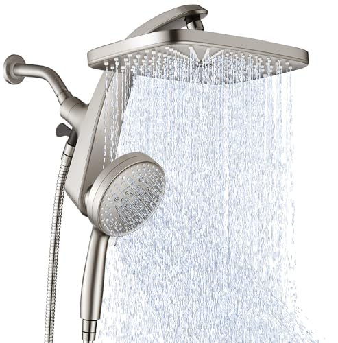
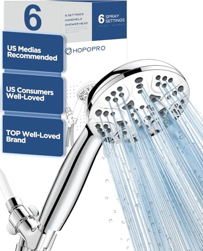

Best Fixed vs Handheld Shower Head (2026) | Best Shower Heads
Prices and picks verified as of September 2026. Independent, reader-supported reviews.


Things to Know Before You Buy
- Same water limit: Both styles cap at 2.5 gallons per minute in the US, so the difference is reach and control, not raw flow.
- Reach decides it: A fixed head sprays straight down from one spot. A handheld lifts off its cradle so you can aim it anywhere.
- Maintenance gap: A fixed head has one fewer part to leak. A handheld adds a hose and connection that can drip over time.
- Price overlap: Good versions of each run $20 to $55, so budget rarely forces the choice.
- You can have both: A dual unit pairs a fixed rain head with a detachable wand if you cannot pick a side.
The fixed vs handheld shower head choice comes down to how you actually use your shower, not which one packs more features. A fixed head bolts to the wall and sprays down from a single angle. A handheld sits in a cradle but lifts off on a hose so you can point the water wherever you need it. Both attach to the same shower arm, both cost about the same, and both push the same maximum flow, so the spec sheet will not settle this for you.
We compared the two on the things that change your morning: build quality, price and value, and the day-to-day shower experience. You also get clear profiles for who each style serves best, since a renter rinsing a dog has very different needs from someone who just wants to step under warm water and stand still. By the end you will know which one belongs on your wall.
Quick Answer
In the fixed vs handheld shower head matchup, a fixed head wins for people who want the simplest, most reliable overhead spray with nothing extra to maintain. A handheld wins for anyone who cleans the tub, rinses kids or pets, or shares a shower with a seated user, because the detachable wand reaches places a wall-mounted head never will. If you want both, a dual unit gives you a fixed rain head and a removable wand on one bracket.
What is Fixed?
A fixed shower head is the classic setup most homes ship with. It threads directly onto the shower arm that sticks out of the wall, and it stays put. You adjust the angle of the head with a ball joint, but the spray always comes from that one mounting point above you. When people picture a shower, this is usually the image in their head.
The category covers a lot of ground. A small wall-mount head with a few spray settings sits at the simple end, while a wide rain head, like the BOZYBO or the CircleSplash, sits at the other, drenching you in a soft overhead sheet. This style trades reach for simplicity. There is no hose to manage, no wand to set down, and one fewer connection that can ever leak.
That simplicity is the whole appeal. You walk in, the water falls, and you stand under it. A fixed head also tends to look cleaner against the wall, which matters in a remodel where you care about the finished room. The catch is that you have to move yourself to the water, since the water will not move to you.
What is Handheld Shower Head?
A handheld shower head splits the unit into two parts. A bracket and a flexible hose mount to the same shower arm, and the spray head clips into a cradle on that bracket. You leave it docked for a normal overhead shower, then lift it off whenever you need to direct the water by hand. Models like the HOPOPRO and the Cobbe ship with hoses around five to six feet long, which gives you real range inside the stall.
This is where the handheld shower head earns its keep. You can rinse shampoo out of a child's hair without spraying their face, wash a muddy dog without soaking the whole bathroom, or clean soap scum off the tub walls in seconds. Anyone who showers while seated, including older adults and people recovering from surgery, gets the water brought to them instead of the other way around.
The flexibility costs a little in tidiness. You now have a hose hanging on the wall and a connection at the bracket that can loosen and drip after a year or two. You also have to remember to seat the head back in its cradle, or it dangles. For most people those are small prices for the added control.
Head-to-Head: Build Quality & Durability
On build quality, the fixed head holds a structural edge here, and the reason is simple math. A fixed head has one waterproof joint where it meets the shower arm. A handheld adds two more potential failure points: the connection where the hose meets the bracket and the connection where the hose meets the wand. Every joint is a place a rubber washer can wear out and start to weep.
That does not make handhelds fragile. A metal hose, like the stainless braided one on the Cobbe, resists kinks and lasts far longer than the cheap plastic hoses on the bargain bin models. The weak link is almost always the hose itself, and a hose is a $10 replacement part you can swap in five minutes. So a handheld is less likely to last untouched for a decade, but it is also cheaper and easier to repair when something does go.
Both styles live or die by their nozzles. Hard water clogs the rubber spray jets on a fixed head and a handheld alike, and a filtered model, like the SR SUN RISE, slows that buildup either way. If you want one unit you install and forget, a fixed head asks the least of you. If you do not mind the occasional washer swap, a well-built handheld keeps pace for years.
Head-to-Head: Price & Value
Price rarely settles the fixed vs handheld shower head decision, because the two overlap almost entirely. A solid handheld like the HOPOPRO runs about $20, and the filtered Cobbe and SR SUN RISE land near $22. Fixed rain heads like the BOZYBO and CircleSplash sit a bit higher, roughly $44 to $53, because you are paying for a larger face and more metal. So if anything, a basic handheld is the cheaper entry point, not the pricier one.
Value depends on what you actually use. Pay for a wide fixed rain head and you get a spa-style overhead soak you will feel every morning. Pay for a handheld and you get a tool that doubles as a tub cleaner and a kid and pet rinser, which saves you buying a separate sprayer. Both are honest buys under $55, so spend on the feature you will reach for daily rather than the higher sticker price.
Head-to-Head: Use Experience
The daily experience is where the fixed vs handheld shower head split feels real. A fixed head gives you a hands-free shower. You step in, the water falls in a steady column, and you keep both hands on washing instead of holding a wand. A wide rain head amplifies that calm, since the soft overhead drench feels closer to standing in warm rain than getting hit by a jet. For people who want to slow down in the morning, nothing beats it.
A handheld trades some of that stillness for control you will miss the moment you lose it. You can pull it down to rinse your back without twisting, aim it at a toddler's shampoo without flooding their eyes, or drop the pressure on a sunburn. Once you have used a handheld to rinse the tub after cleaning it, going back to a fixed head feels like a step backward.
The flip side is small friction. You hold the wand when you use it, you re-seat it in the cradle when you finish, and the hose is one more thing on the wall. A handheld also sprays in whatever direction you leave it, so a half-docked head can soak the ceiling. Neither annoyance is a dealbreaker, but the fixed head asks nothing of you while the handheld asks for a little attention in exchange for a lot of reach.
When to Choose Fixed
Choose a fixed shower head when you want the simplest setup that just works. If your showers are about standing under warm water and zoning out, the hands-free overhead spray suits you better than any wand. You also lean fixed if you are remodeling and care how the wall looks, since a clean wall-mounted head, especially a wide rain face like the BOZYBO, finishes a bathroom in a way a dangling hose never will. This is the low-maintenance pick: one connection, nothing to set down, and very little that can leak. Households without kids, pets, or anyone who showers seated rarely miss the extra reach. Pick fixed when you value calm and reliability over flexibility.
When to Choose Handheld Shower Head
Choose a handheld shower head when your shower does more than rinse one adult. Parents reach for the wand to wash a toddler's hair without a fight, and pet owners use it to bathe a dog without spraying the whole room. Anyone who showers while seated, including older adults and people healing from an injury, gets the water brought to them instead of having to stand and turn. The handheld also doubles as a cleaning tool, so you can rinse soap scum and hair off the tub walls in seconds. A filtered model like the SR SUN RISE or Cobbe adds hard-water protection on top. Pick the wand when control and reach matter more than the slightly tidier wall of a fixed head.
Our Top Picks
After comparing both sides of the fixed vs. handheld shower head debate, these are the three picks we keep recommending — one for each main scenario.

Editor’s Pick
High Pressure Rain Shower Head: Upgrade
If you want one pick that wins on the most variables in this comparison, this is the one to start with.
$52.99
Check Price on Amazon
Best Value
HOPOPRO 6-Mode High Pressure Handheld Shower
Best bang for the buck in this category — keeps the essentials, drops what most buyers never use.
Neither wins outright. Not by much on modern models.Is a fixed or handheld shower head better?
Does a handheld shower head have less pressure than a fixed one?
Frequently Asked Questions9.99 Check Price on Amazon

Premium Choice
AquaDance High Pressure 6-Setting Oil Rubbed
Worth the upgrade when finish quality and long-term durability outweigh the higher price tag.
$29.99
Check Price on AmazonFrequently Asked Questions
Is a fixed or handheld shower head better?
Neither wins outright. A fixed shower head suits people who want a simple, steady overhead spray with almost nothing to maintain. A handheld shower head suits anyone who rinses kids or pets, cleans the tub, or shares the shower with someone seated, because the wand reaches where a fixed head cannot. Match the style to how you shower, not to which one sounds fancier.
Does a handheld shower head have less pressure than a fixed one?
Not by much on modern models. Both fixed and handheld shower heads in the United States are capped at 2.5 gallons per minute, so the flow ceiling is the same. A handheld can lose a little pressure through the hose and connection, but a well-built handheld with a high-pressure nozzle, like the HOPOPRO, feels just as strong as most fixed heads.
Can I install a handheld shower head myself?
Yes. Both styles thread onto the same standard half-inch shower arm, so you swap them by hand in a few minutes. Wrap the threads with plumber's tape, screw on the new head or the handheld bracket and hose, then run the water to check for leaks. You do not need a plumber for either one.
Can you get a fixed and handheld shower head in one unit?
Yes, and it is a popular middle path. A dual unit mounts a fixed rain head and a detachable handheld wand on the same bracket, with a diverter that switches between them or runs both at once. If you keep going back and forth in the fixed vs handheld shower head debate, a dual head lets you stop choosing.
Which one is better for cleaning the bathtub?
The handheld, with no real contest. You lift the wand off its cradle and rinse soap scum, hair, and cleaner straight off the tub walls and floor in seconds. A fixed head only sprays one fixed angle, so you end up scooping water by hand to clear the same surfaces.
Final Verdict
The fixed vs handheld shower head decision has no single winner, only a better fit for you. Go fixed if you want a clean wall, a calm overhead soak, and the least maintenance possible. Go handheld, and an affordable, high-pressure pick like the HOPOPRO covers rinsing kids, washing pets, cleaning the tub, and helping a seated user, all for around $20. If you truly cannot choose, a dual unit gives you both on one bracket so you never have to.